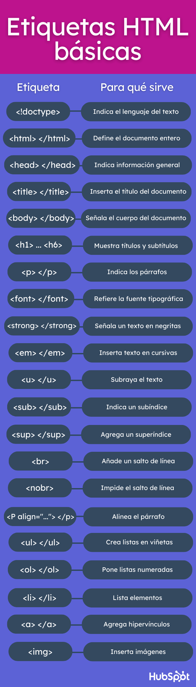

Titulos 1
Titulo 2
Titulo 3...
Titulo 6
Sirven para crear los párrafos y dentro de ellas también se indican atributos específicos, como la alineación del texto, ya sea izquierda, derecha, centrada o justificada.
Negritas del doc
Cursivas
Subrayar
H
2
O.
La respuesta a X*X=X
2
Mira como salta
la linea
Si, por el contrario, quieres que el contenido se extienda horizontalmente, sin romper líneas de texto, indícalo con esta etiqueta al inicio. Así, el lector podrá avanzar hacia la derecha gracias al cursor que el navegador agregará de forma horizontal.
Este párrafo está centrado.
- Manzanas
- Bananas
- Naranjas
- Queso
- Jamon
- Huevos
Ir a Google

